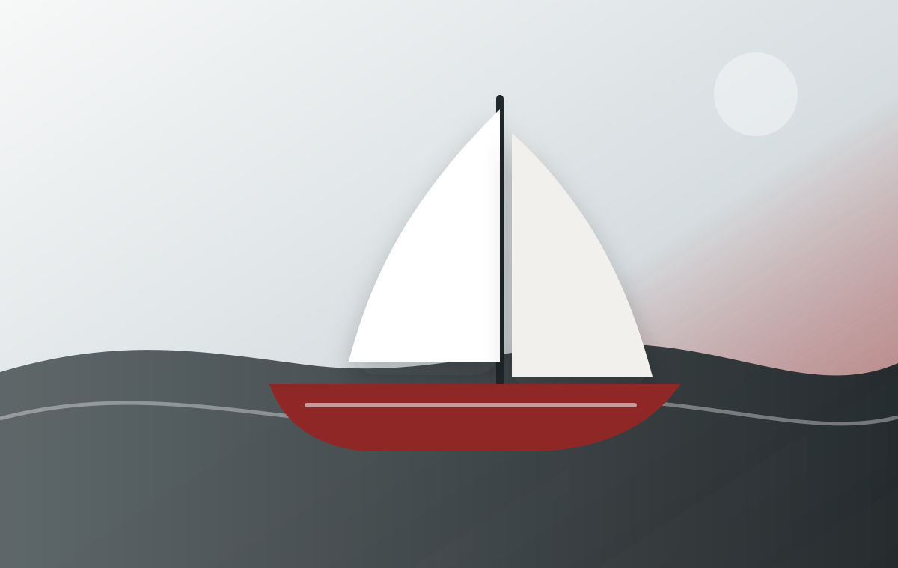
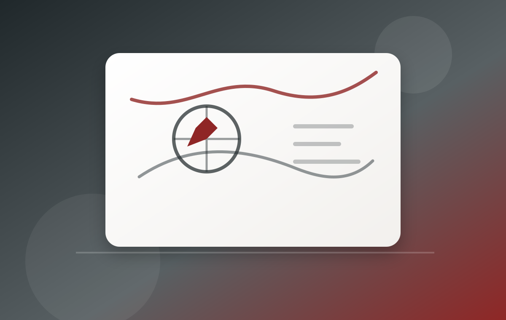
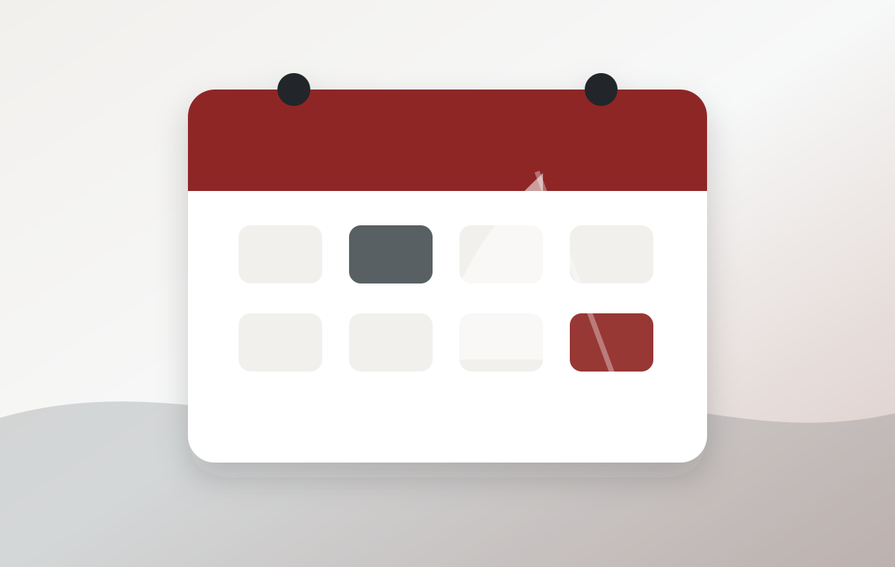

Парусная школа в сердце Адриатики
Черногория — удобная акватория для обучения: марины, острова, ветер и понятные переходы.
Обучение яхтингу в Черногории: море, практика, маршрутные выходы и подготовка к самостоятельному управлению яхтой.

Коротко, практически и на настоящей яхте. Без лишней теории ради теории.
Черногория — удобная акватория для обучения: марины, острова, ветер и понятные переходы.

IYT Bareboat Skipper и VHF Operator: теория, практика, безопасность, навигация и работа экипажа.

Обучение, регаты и путешествия в одном хронологическом списке. Без календарной сетки.